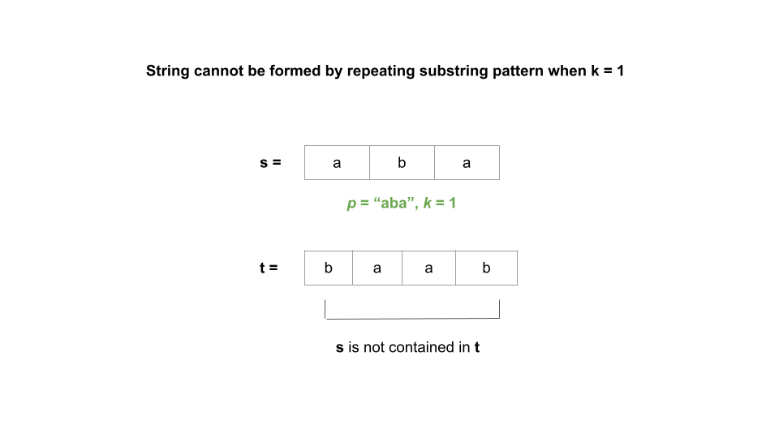
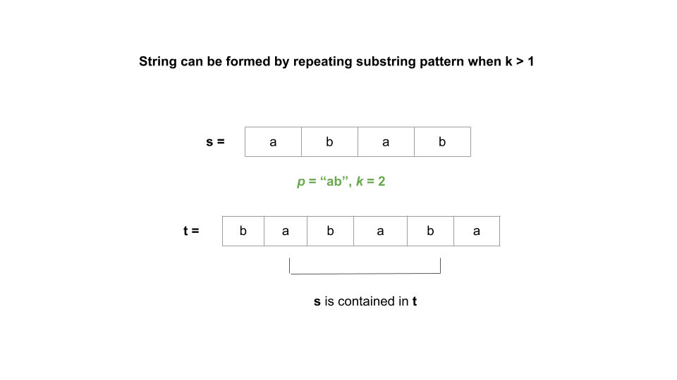

Given a string s, our task is to check whether it can be constructed by taking a substring of it and
appending multiple copies of the substring together.
We may realize that it is impossible to construct s by repeating substrings whose length is not a
divisor of the length of s.
We only need to look at substrings where the length divides n, where n is the length of
s. Another thing that we can notice is that the substring would need to be a prefix of s,
otherwise there would be an immediate mismatch.
For each prefix of length i that divides n, we would concatenate the prefix n /
i times to generate another string. If this string generated by repeated substrings equals s, we
return true.
If no prefix is found that when repeated equals s, we return false.
n equal to the length of s.i = 1 to n / 2:
i divides n, we declare an empty string pattern. Use an inner
loop that iterates n / i times to concatenate the substring formed from the first
i characters of s.
pattern equals s, we return true.s. As a result, we return false.
Java
class Solution {
public boolean repeatedSubstringPattern(String s) {
int n = s.length();
for (int i = 1; i <= n / 2; i++) {
if (n % i == 0) {
StringBuilder pattern = new StringBuilder();
for (int j = 0; j < n / i; j++) {
pattern.append(s.substring(0, i));
}
if (s.equals(pattern.toString())) {
return true;
}
}
}
return false;
}
}
C++
class Solution {
public:
bool repeatedSubstringPattern(string s) {
int n = s.length();
for (int i = 1; i <= n / 2; i++) {
if (n % i == 0) {
string pattern = "";
for (int j = 0; j < n / i; j++) {
pattern += s.substr(0, i);
}
if (s == pattern) {
return true;
}
}
}
return false;
}
};
Python3
class Solution:
def repeatedSubstringPattern(self, s: str) -> bool:
n = len(s)
for i in range(1, n // 2 + 1):
if n % i == 0:
pattern = s[:i] * (n // i)
if s == pattern:
return True
return False
Here nn
is the length of s.
Time complexity: O(n⋅n)O(n \cdot \sqrt{n}).
n can have a maximum of 2⋅n2 \cdot \sqrt{n}
number of divisors. As a result, we would execute the inner loop that concatenates the substring O(n)O(\sqrt{n}) times. In the inner loop, we concatenate a
substring of length i for n / i times to generate a string of length
n, which would require O(n)O(n)
time for each iteration. As a result, it would take O(n⋅n)O(n \cdot \sqrt{n}) in total.
Space complexity: O(n)O(n).
pattern, which is initialized to an empty string before
the inner loop iteration and grows up to a length of nn
after the inner loop iteration.
Note: This is a very advanced approach and might not be expected in an interview.
Consider a string S = "helloworld". Now, given another string T = "lloworldhe", can we
figure out if T is a rotated version of S? By rotated version, we mean taking
S and shifting it any number of spaces (with wrap around). For example, if S = "abc" and
we shifted it to the left once, we would have "bca".
Yes, we check if T is a rotated version of S by checking if it is a substring of S +
S. This is because S + S contains all of the rotations of S.
Let's try to use this fact to solve our problem.
We consider every rotation of string S such that it's rotated by k units (where k
< s.length) to the left. Specifically, we're looking at strings elloworldh",
lloworldhe, loworldhel, etc.
If a string can be constructed by taking a substring of it and appending multiple copies of the substring together, it must be a rotation of itself. However, it would be inefficient to check all rotations.
Let t = s + s. We can easily and efficiently check all possible rotations by removing the first and last
character of t, then checking if s is a substring of t.
We can prove that the solution works mathematically.
Let's assume s = p * k where p is a pattern that has been repeated k times. If
there is no repeating pattern in s, k would be 1 and p = s. If
there is a repeating pattern, then k > 1.
If we concatenate s twice, i.e., form another string t where t = s + s and
remove the first and last character from it, t would look like t = (head + p * (k - 1)) + (p * (k
- 1) + tail) where head is p without first character, tail is
p without last character and p * (k - 1) denotes p repeated k -
1 times.
As a result, t = head + p * (2k - 2) + tail. We now have 2 possibilities: either k = 1 and
the answer is false, or k > 1 and the answer is true.
If k = 1, then 2k - 2 = 0 and t = head + tail. Remember, head is
equal to p with the first character removed, and tail is equal to p with the
last character removed. We can simplify this as t is equal to p + p with the first and
last characters removed. Now, s cannot possibly be a substring of t because s =
p and we removed the first and last character.
k = 1, then s cannot be a substring of t and the answer is
false. Here's a visual representation where k = 1:

k > 1, then 2k - 2 is some nonzero integer x. This means t =
head + p * x + tail.
s = p * k. This means that as long as x >= k,
s must be contained within p * x, and thus within t.
x = 2k - 2, so the inequality becomes 2k - 2 >= k. We can rearrange this to
k >= 2, which is the same thing as k > 1.
k > 1, it implies two things: first, the answer to the problem is true.
Second, x >= k and thus s must be a substring of p * x, and thus a
substring of t. Here's a visual representation where k > 1:

So, concatenate s twice and then remove the first and last characters from it. The answer to the problem
is the answer to "does this new string contain s as a substring"?
t and set it to s + s.t contains s, we
return true. Otherwise, return false. Note in our implementation, the
substr function in C++ and the substring method in Java both
take two parameters. In both languages, the first parameter is the initial index from which our substring
begins, while the second parameter works differently. It is the length of the substring in C++ and
the index of the last character in Java.
Java
String t = s + s;
if (t.substring(1, t.length() - 1).contains(s))
return true;
return false;
C++
class Solution {
public:
bool repeatedSubstringPattern(string s) {
string t = s + s;
if (t.substr(1, t.size() - 2).find(s) != -1) return true;
return false;
}
};
Python3
class Solution:
def repeatedSubstringPattern(self, s: str) -> bool:
t = s + s
if s in t[1:-1]:
return True
return False
Here nn
is the length of s.
Time complexity: O(n)O(n).
t followed by its substring by eliminating the first and final character.
s in t
takes O(n2)O(n^2) in Java and
Python3 but O(n)O(n)
in C++. However, one can use algorithms like KMP to solve it in linear time.
Space complexity: O(n)O(n).
t that takes O(n)O(n) space.